Memorie e circuiti sequenziali
1 Circuiti combinatori vs sequenziali
I circuiti combinatori sono in grado di calcolare funzioni che dipendono solo dai dati in input
I circuiti sequenziali sono invece in grado di calcolare funzioni che dipendono anche da uno stato ovvero, che dipendono anche da informazioni memorizzate in elementi di memoria interni
- In generale, la funzione calcolata dal circuito sequenziale ad un dato istante dipende dalla sequenza temporale dei valori in input al circuito
- La sequenza temporale determina infatti il valore memorizzato nello stato
2 Elementi di memoria
Per realizzare circuiti sequenziali è necessario un elemento di memoria per memorizzare lo stato
Possiamo organizzare le porte logiche in modo da realizzare un elemento di memoria?
- Si, un elemento in grado di memorizzare un singolo bit è il LATCH
3 S-R Latch
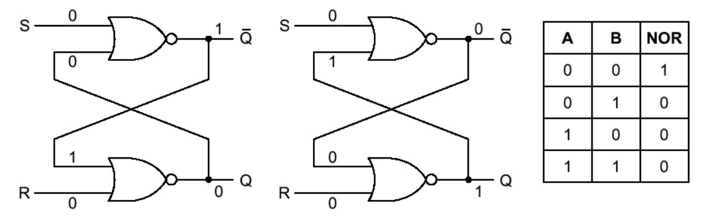
L’S-R Latch è un circuito composto da 2 porte NOR concatenate
- S sta per Set
- R sta per Reset
Anche se (S,R)=(0,0), gli output del latch possono comunque essere diversi
- l’output è infatti il valore memorizzato nel latch
- verificare che il latch a sinistra memorizza il valore 0, mentre quello a destra il valore 1
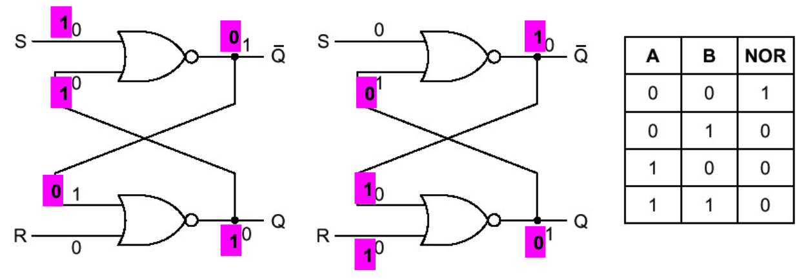
Poniamo per esempio (S,R)=(1,0) per effettuare il setting del latch a sinistra
- il valore memorizzato passa da 0 a 1 (e viene poi mantenuto riportando S=0)
Poniamo per esempio (S,R)=(0,1) per effettuare il resetting del latch a destra
- il valore memorizzato passa da 0 a 1 (e viene poi mantenuto riportando R=0)
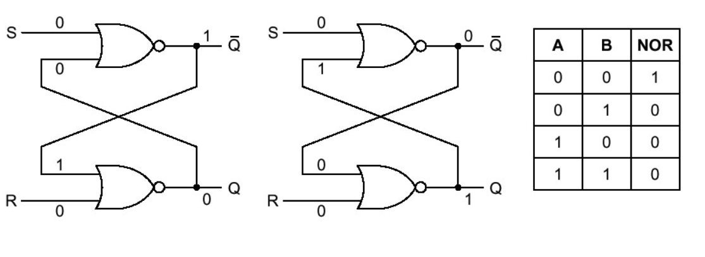
La combinazione (S,R) = (0,0) viene detta combinazione di riposo, perché semplicemente mantiene il valore memorizzato in precedenza
La combinazione di valori (S,R)=(1,1) non deve mai essere presentata al latch
4 Clock
I segnali S e R devono essere stabili, e valere, (1,0) o (0,1) per poter memorizzare un valore corretto Ma (S,R) sono di solito calcolati da un circuito combinatorio
- l’output del circuito diventa stabile dopo un certo intervallo di tempo
- l’intervallo di tempo dipende dal numero di porte attraversate e dal ritardo delle porte
- bisogna evitare che durante questo intervallo, gli output intermedi del circuito vengano presentati al latch per la memorizzazione
Soluzione \(\rightarrow\) usiamo un segnale a gradino, detto clock, il cui intervallo di tempo tra l’inizio di un gradino e quello successivo viene scelto abbastanza grande da assicurare la stabilità degli output del circuito
- usiamo il clock per abilitare la scrittura nei latch
- il clock determina il ritmo dei calcoli e delle relative operazioni di memorizzazione
- il ciurcuito diventa sincrono
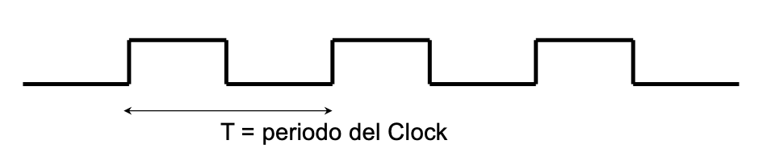
5 Unità di misura
Se il periodo T è espresso in sec
- Frequenza di clock: Freq = 1/T Hz (numero di cicli al secondo)
Se T = 10 nsec qual è la franquenza del clock?
- \(1 nsec = 10^{-9} sec\)
- Freq = \(1/T = 1/(10 \times 10^{-9})\) = 108Hz = 108Hz = \(102 \times 106\) Hz=100 MHz
Se T = 1 nsec, qual è la differenza del clock?
- \(1 nsec = 10^{-9} sec\)
- Freq=\(1/T = 1/10^{-9} = 109\) Hz = 1 GHz
6 Latch clockato (D-latch)
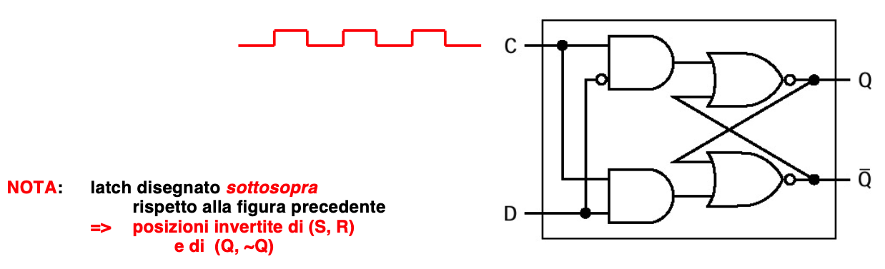
D=1 corrisponde al setting -S=1 e R=0
D=0 corrisponde al resetting -S=0 e R=1
La combinazione S=1 e R=1 non può mai verificarsi
A causa delle 2 porte AND quando il clock è deasserted abbiamo che nel latch non viene memorizzato alucn valore: S=0 e R=0 (viene mantenuto il valore precedentemente memorizzato)
Viene memorizzato un valore solo quando il clock è asserted. Se il segnale C fosse invertito (porta NOT aggiuntiva), il latch memorizzerebbe sul valore basso del clock (cioè quando il clock è deasserted)
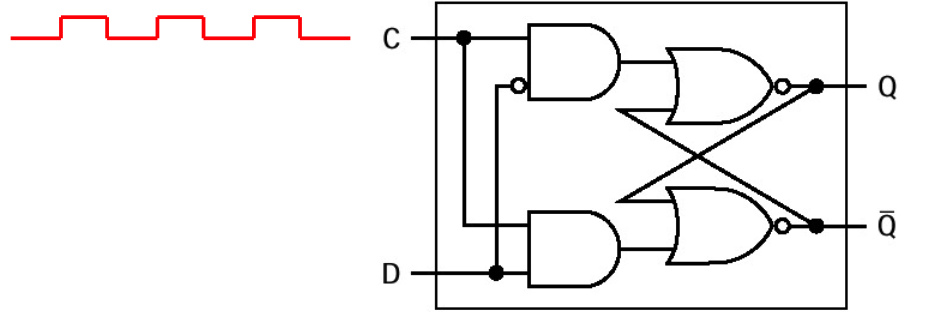
7 Diagramma temporale del D-latch
Il segnale D, ottenuto solitamente come output di un circuito combinatorio
- deve essere già stabile quando C diventa asserted
- deve rimanere stabile per tutta la durata del livello alto di C (Setup time)
- deve infine rimanere stabile per un altro periodo di tempo per evitare malfunzionamenti (Hold time)
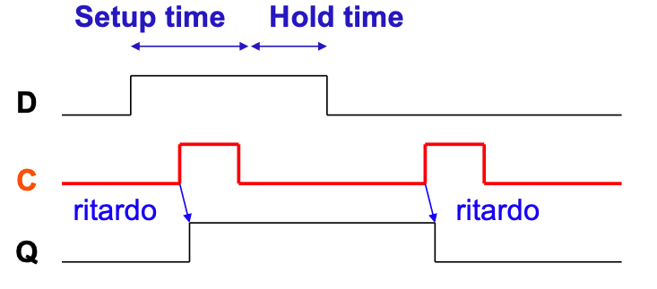
7.1 Ritardi nella propagazione dei segnali nei circuiti
I circuiti reali hanno ritardi non-nulli, che dipendono dai cammini, ovvero delle porte e dai fili, attraversati dai segnali. Gli output possono temporaneamente cambiare da valori corretti a valori errati, e ancora a valori corretti
- questo fenomeno è noto come glitch
- dopo un certo intervallo, con alta probabilità i segnali si stabilizzano
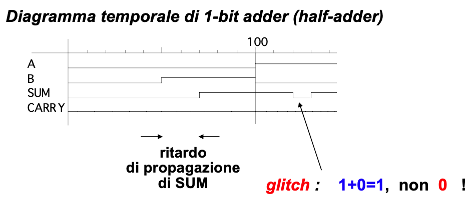
8 Periodo del ciclo di clock
Il periodo T deve essere scelto abbastanza lungo affinché l’output del circuito combinatorio si stabilizzi
- deve essere stabile un po’ prima D del periodo di apertura del latch C (setup time), e lo deve rimanere per un certo tempo (hold time)
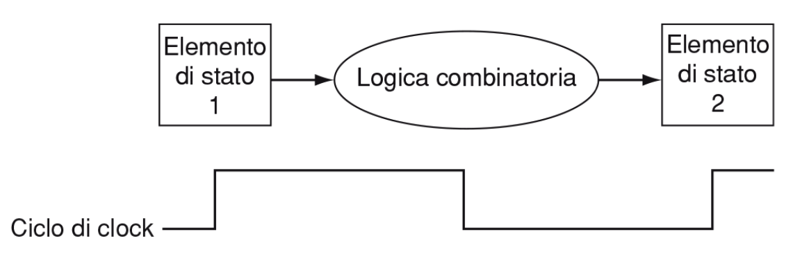
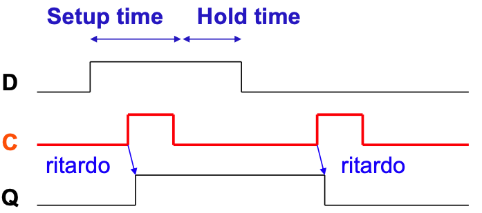
9 D-latch clockato: fenomeno della trasparenza
Osserviamo il seguendo comportamente del D-latch clockato:
- durante l’intervallo alto del clock il valore sel seguente di ingresso D viene memorizzato nel latch
- il valore di D si propaga immediatamente (o quasi) all’uscita Quante
- ma anche eventuali variazioni di D si propagano immediatamente, col risultato che Q può variare più volte durante l’intervallo altod del clock
- solo quando il clock torna a zero Q si stabilizza
- possiamo concludere che durante l’intervallo alto del clock il latch non esercita di fatto alcuna funzione di memorizzazione.
Questo comportamento è noto come trasparenza del latch
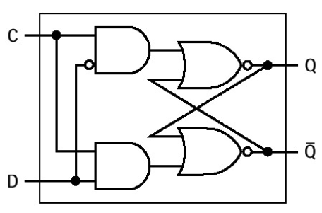
10 Elemento di memoria usato come input e output
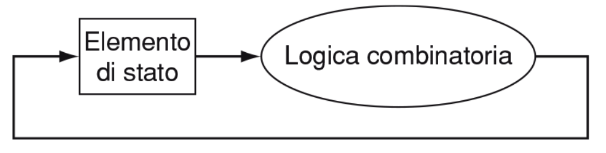
Durante ogni periodo di clock
- il circuito combinatorio dovrebbe calcolare una funzione sulla base dell’attuale valore dell’elemento di memoria (stato del circuito)
- l’output calcolato dovrebbe diventare il nuovo valore da memorizzare nell’elemento di memoria (nuovo stato del circuito)
- il nuovo valore memorizzato dovebbe essere usato come input del circuito di durante il ciclo di clock successivo
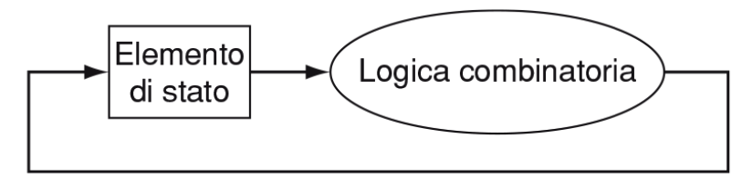
l’elemento di memoria deve essere usato sia come input che come output durante lo stesso ciclo di clock.
Il D-latch precedente funzionerebbe in questo caso ?
- Purtroppo no, perché se il clock rimane alto per molto tempo, allora il valore memorizzato nel latch potrebbe nel frattempo fluire fuori,
entrare nel circuito, e un valore scorretto potrebbe finire per essere memorizzato nel latch
10.1 Metodologia di timing
Si possono progettare componenti di memoria, in cui la memorizzazione può avvenire in vari istanti rispetto al segnale a gradino del clock
- level-triggered methodology
- avviene sul livello alto (o basso) del clock
- il D-latch precedente era level-triggered (rispetto al livello alto)
- edge-triggered methodology
- avviene sul fronte di salita (o di discesa) del clock
- possiamo immaginare che la memorizzazione avvenga istantaneamente, e che l’eventuale segnale di ritorno sporco, proveniente dal circuito combinatorio, non faccia in tempo ad arrivare a causa dell’istantaneità della memorizzazione
- gli elementi di memoria di tipo edge-triggered si chiamano flip-flop
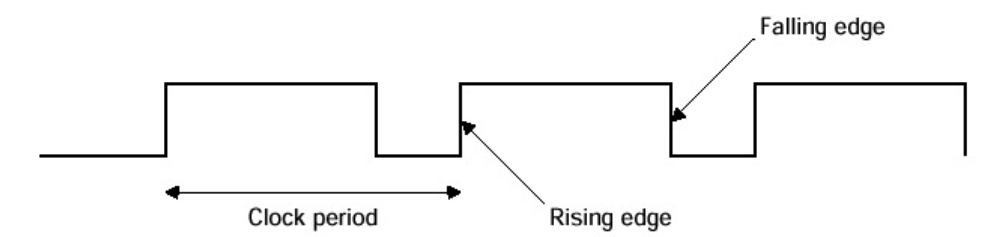
10.2 Generatore di impulsi
Il generatore di impulsi permette appunto di generare impulsi brevissimi in corrispondenza del fronte di salita di un segnale a gradino
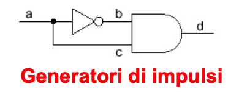
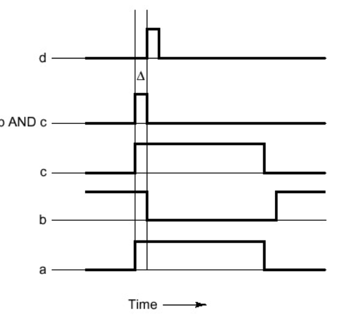
11 Flip-Flop semplice con generato di impulsi
Il flip - flop semplice memorizza istantaneamente il valore di D (input) sul fronte di salita del clock: in corrispondenza dell’impulso.
Metodologia edge-triggered di tipo rising triggered.
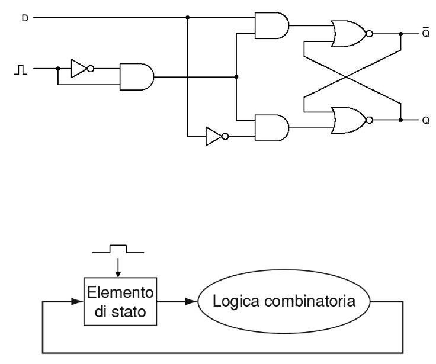
Il segnale memorizzato comincia a fluire subito fuori dal flip-flop. Causa brevità dell’impulso, il segnale “non fa però in tempo” a entrare/uscire nel/dal circuito combinatorio a valle, e a modificare l’input del flip-flop
12 Flip-Flop più complesso (D flip-flop)
Il Flip-flop di tipo D usabile come input e output durante uno stesso ciclo di clock:
- realizzato ponendo in serie 2 D-latch: il primo viene detto master e il secondo slave
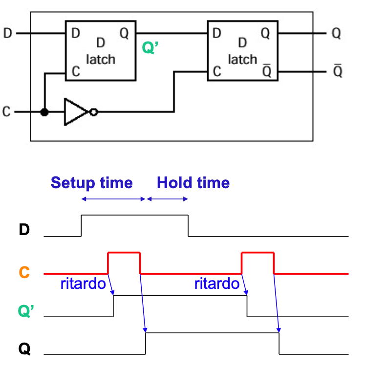
Metodologia edge-triggered:
- rispetto al flip-flop precedente, questo è di tipo falling triggered
- per semplicità, possiamo pensare che la memorizzazione avvenga in maniera istantanea su fronte di discesa del clock C
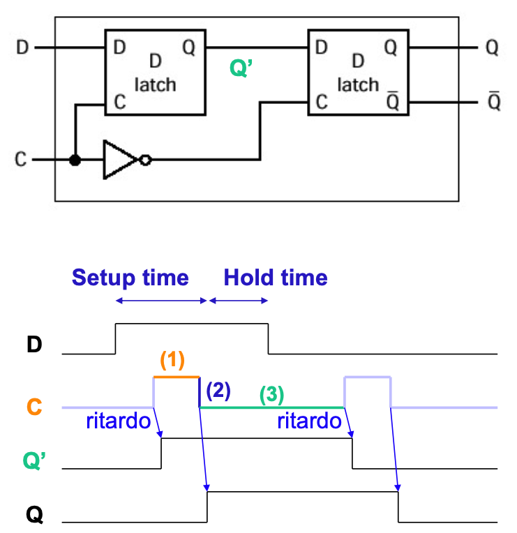
13 Funzionamento
- Il primo latch è aperto e pronto per memorizzare D. Il valore memorizzato Q’ fluisce fuori,
ma il secondo latch è chiuso.
- Il segnale del clock scende, e in questo istante il secondo latch viene aperto per memorizzare il valore di Q’
- Il secondo latch è aperto, memorizza D (Q’), e fa fluire il nuovo valore Q nel circuito a valle. Il primo latch è invece chiuso, e non memorizza niente
13.1 Uso degli elementi di memoria
Sappiamo come costruire gli elementi di memoria. Vediamo come utilizzarli per realizzare:
- Circuiti sequenziali
- Register File
- Memorie principali
- Circuito sequenziale sincrono
Blocco logico con linee in input e output composto da:
- circuiti combinatori
- elementi di memoria clockati (registri realizzati tramite flip-flop), che mantengono lo stato del circuito e che possono essere letti/scritti nello stesso periodo di clock
I circuiti combinatori sono le componenti che calcolano funzioni che generano:
- i valori in output
- i valori da memorizzare negli elementi di memoria
14 Circuiti sequenziali
Registro di stato realizzato con flip-flop che impiegano una metodologia f*alling edge triggered
- durante il periodo ti, il prossimo stato viene calcolato ovvero lo stato al tempo ti+1, ma viene memorizzato solo in corrispondenza del fronte di discesa del clock
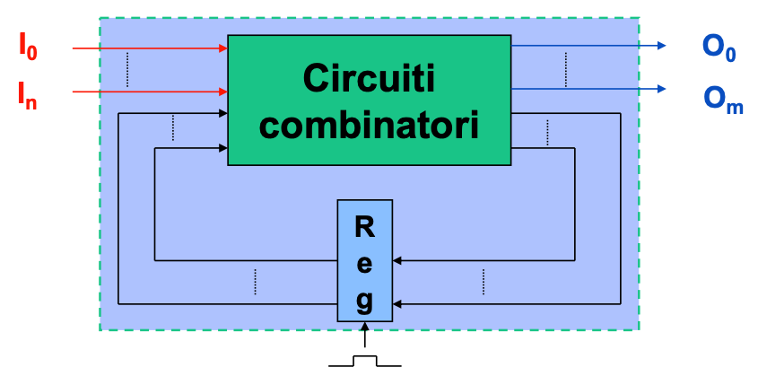
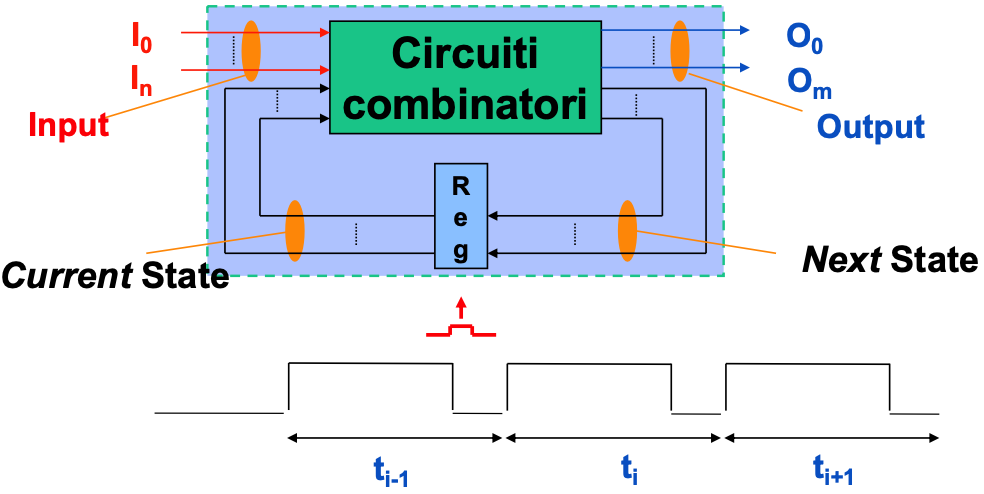
15 Tipi di circuito (Mealy vs Moore)
- \(INPUT(t_i)\) e \(OUTPUT(t_i)\) i valori presenti, rispettivamente, sugli input e gli output dei circuiti combinatori al tempo ti
- \(STATE(t_i)\) i valori presenti nei registri di stato al tempo ti
Circuito sequenziale di Mealy
- \(OUTPUT(t_i) = d(INPUT(t_i), STATE(t_i))\)
- \(NEXT_STATE(t_i + 1) = l(INPUT(t_i), STATE(t_i))\)
Circuito sequenziale di Moore
- \(OUTPUT(t_i) = d(STATE(t_i))\)
- \(NEXT_STATE(t_i+1) = l(INPUT(t_i), STATE(t_i))\)
Definiamo quindi i due tipi di circuito:
Circuito sequenziale di Mealy
- \(OUTPUT(t_i) = d(INPUT(t_i), STATE(t_i))\)
Circuito sequenziale di Moore
- \(OUTPUT(t_i) = d(STATE(t_i))\)
- valore dell’output al tempo ti dipende solo dal valore dei registri di stato
\(STATE(t_i)\) modificato alla fine del ciclo di clock precedente \((t_i-1)\) in base a:
- input a quel tempo presenti in ingresso al circuito: \(INPUT(t_i-1)\)
- stato a quel tempo memorizzato nei registri: \(STATE(t_i-1)\)
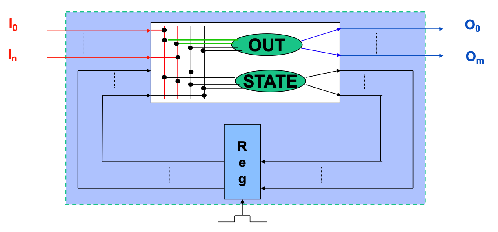
16 Sintesi di reti sequenziali
Per sintetizzare il circuito sequenziale in maniera diretta basta conoscere le tabelle di verità delle funzioni:
- OUTPUT e NEXT_STATE
Dalle tabelle siamo poi in grado di determinare le equazioni booleane e i corrispondenti circuiti.
È possibile specificare il comportamento di un circuito sequenziale tramite un particolare programma ad eventi, espresso graficamente tramite un automa a stati finiti
- grafo diretto
- nodi (stati) + archi (transizioni di stato)
- etichette sui nodi e sugli archi (input/output)
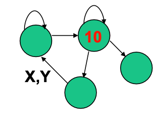
17 Register File
La Parte Operativa (Datapath) della CPU contiene, oltre all’ALU, alcuni registri che memorizzano, all’interno della CPU, gli operandi delle istruzioni aritmetico/logiche. Ogni registro è costituito da n flip-flop, dove n è il numero bit che costituiscono una Word:
- nel MIPS ogni registro è di 1 Word = 4 B = 32 b
Più registri sono organizzati in una componente nota come Register file:
- il Register File del MIPS contiene 32 registri (32x32=1024 flip-flop)
- deve permettere: lettura di 2 registri, e scrittura di 1 registro
- Singolo Registro
Nel Datapath della CPU, il clock non entra direttamente nei vari flip-flop:
- viene messo in AND con un segnale di controllo: Write
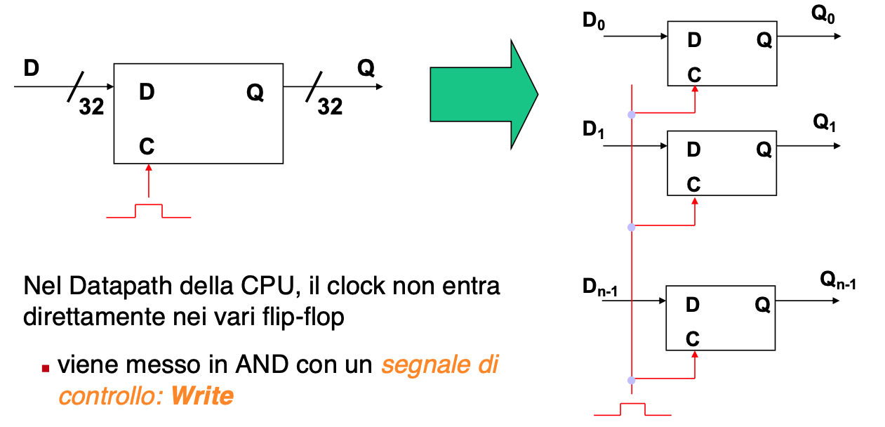
- Lettura del Register File
2 MUX 32:1
- larghi 32 bit
I controlli dei 2 MUX sono:
- Read Reg1 #
- Read Reg2 #
Nota che il Register file fornisce sempre in output una coppia di registri:
- non significativi, se i controlli Read Reg1 e Read Reg2 non lo sono
- in tal caso, i circuiti che potenzialmente potrebbero usarli, devono ignorali
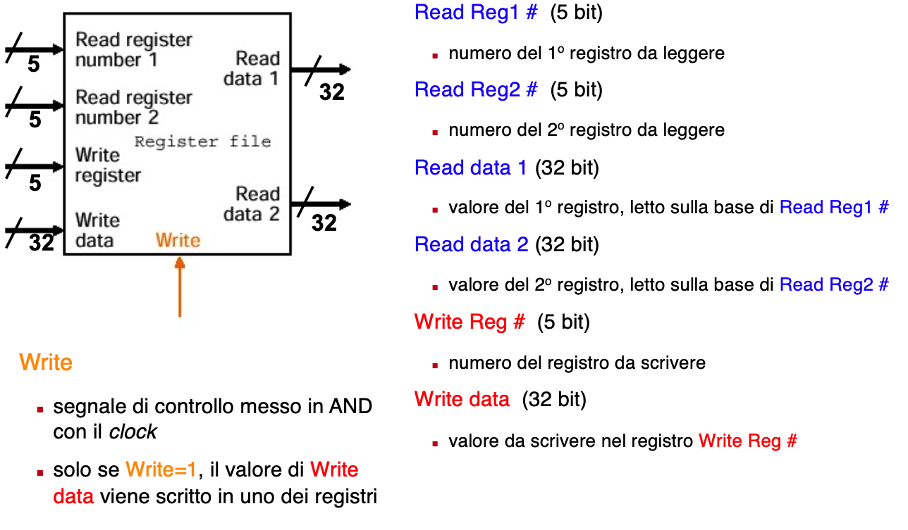
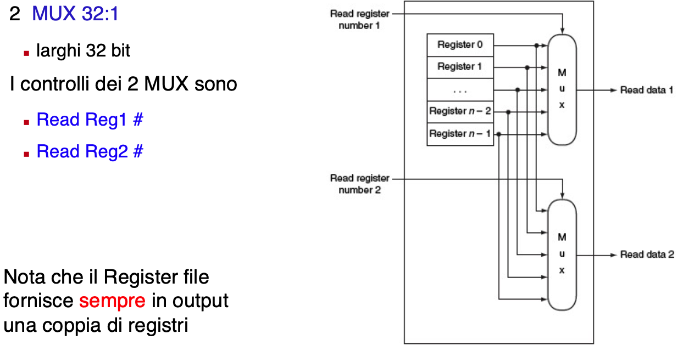
18 Scrittura del Register File
Decoder che decodifica il segnale di controllo Write Reg (5 bit)
- 32 bit in output
Il segnale di Write (a sua volta in AND con il clock) abilita solo uno dei 32 registri
- il segnale di Write è infatti in AND con l’output del Decoder
Se il segnale di Write è non affermato, i possibili valori spuri in input non verranno memorizzati nel Register file
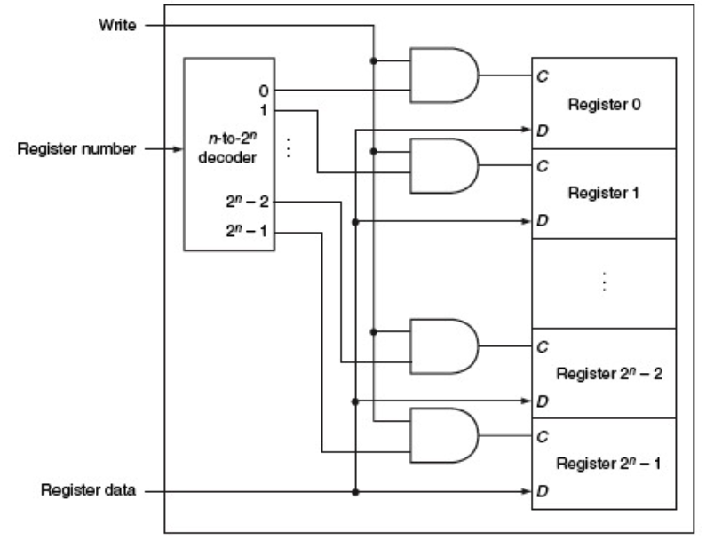
- Lettura/Scrittura nel Register File
Domanda: cosa succede se uno stesso registro del Register file viene acceduto in lettura e scrittura durante uno stesso ciclo di clock?
Risposta: poiché la scrittura sul registro avviene sul fronte di discesa del clock, il valore ritornato dalla lettura sarà quello memorizzato in un ciclo di clock precedente.
19 Memoria principale
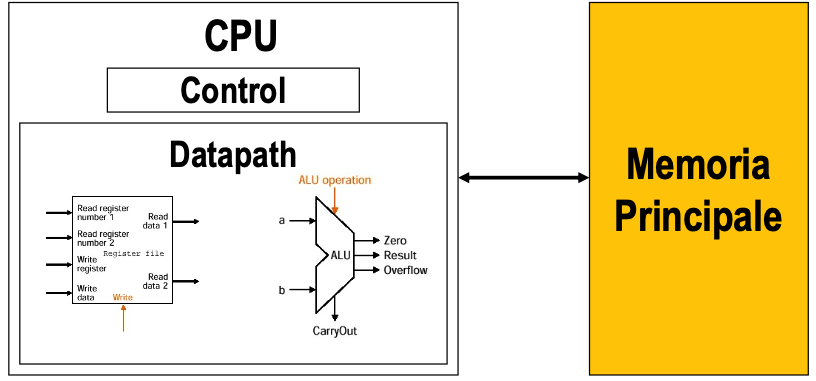
La dimensione del Register File è piccola:
- registri usati per memorizzare singole variabili di tipo semplice
- purtroppo per memorizzare dati strutturati e codice di programma, sono tipicamente necessari diversi KB o MB
Memoria principale (RAM):
- meno veloce della memoria dei registri, ma molto più capiente
- è detta Random Access Memory perché i tempi di accesso sono indipendenti dal valore dell’indirizzo della cella di memoria acceduta
20 SRAM e DRAM
La SRAM (Static RAM) è più veloce:
- per la sua realizzazione vengono usati dei latch
- è usata per realizzare memorie veloci, come le memorie cache
- tempi di accesso intorno a 0,5 - 2,5 ns
La DRAM (Dynamic RAM) è più capiente ma più lenta:
- tempi di accesso intorno a 50-70 ns
- non è realizzata tramite latch
- ogni bit è memorizzato tramite un condensatore
- è necessario rinfrescare il contenuto delle DRAM a intervalli di tempo prefissati
- è usata per realizzare memorie capienti come quella principale
21 SRAM
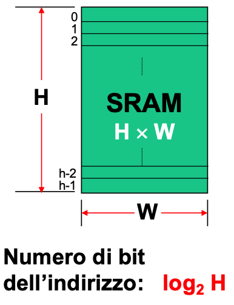
SRAM realizzata come matrice di latch HxW:
- larghezza o ampiezza W (numero di latch per ogni cella)
- altezza H (numero di celle indirizzabili)
- per ragioni costruttive W è spesso piccolo
- singolo indirizzo per lettura o scrittura
- non è possibile scrivere e leggere contemporaneamente, a differenza del Register File
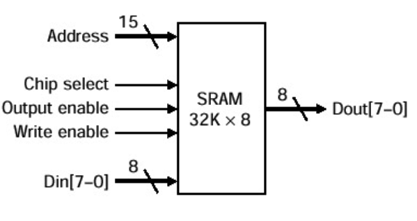
Esempio 1:
- 256K X 1 (256K celle da 1 bit = 256Kb)
Esempio 2:
- 32K X 8* ́(32K celle da 8bit=256Kb)
Per scrivere:
- Chip select affermato
- Indirizzo in Address
- Write enable affermato
- Dato in input in Din
Per leggere:
- Chip select affermato
- Indirizzo in Address
- Output enable affermato
- Dato in output in Dout
22 Realizzazione SRAM
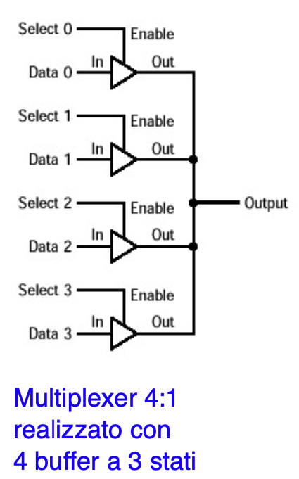
Tecniche realizzative diverse rispetto a quelle del register file:
- il register file impiega decoder (per selezionare il registro da scrivere) e multiplexer (per selezionale il registro da leggere)
- con un numero elevato di celle di memoria avremmo bisogno di enormi decoder o multiplexer
- avremmo bisogno di porte AND con fan-in troppo elevato
- necessari livelli multipli di porte AND, con conseguente introduzione di ritardi negli accessi alla memoria
Per evitare il multiplexer in uscita:
- possiamo usare una linea di bit condivisa su cui i vari elementi di memoria sono tutti collegati (or-ed)
- il collegamento alla linea condivisa avviene tramite buffer a tre stati, che aprono o chiudono i collegamenti (se il controllo è affermato o meno).
In particolare il buffer ha due ingressi (dato e segnale di Enable) e una uscita:
- l’uscita è uguale al dato (zero o uno) se Enable è affermato
- l’uscita viene impedita (high-impedance state) se Enable non è affermato
22.1 SRAM 4x2
I latch di una certa colonna sono collegati alla stessa linea in output (Dout[0] e Dout[1])
- nell’esempio ogni elemento di memoria (D-latch) ha un segnale di Enable che abilita il three-state buffer interno
Il Decoder serve ad abilitare in lettura/scrittura una certa linea della memoria:
- entrambi i segnali Write enable ed Enable vengono abilitati su una sola linea di memoria (2 bit)
Chip Enable e Output Enable sono stati omessi per semplicità ma possono essere aggiunti con qualche porta AND:
- solo se Chip Enable è abilitato i segnali Write Enable e Output Enable sono significativi (servono porte AND aggiuntive)
- solo se Output Enable è affermato, la coppia Dout[0-1] dovrebbe essere abilitata ad uscire (Output Enable in AND con Enable, a sua volta determinato dal decoder)
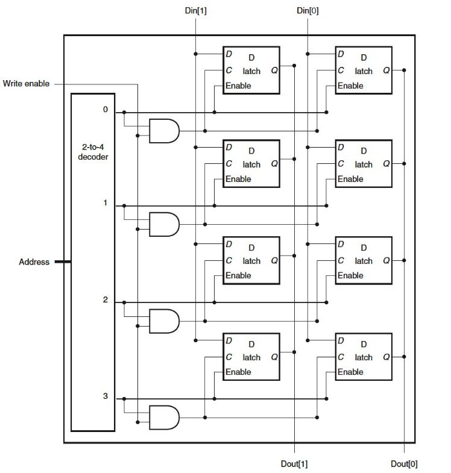
22.2 SRAM a due livelli
Nel caso precedente abbiamo evitato l’uso dei Multiplexer, ma rimane il problema del Decoder grande Per ovviare, decodifica degli indirizzi a due livelli. Usiamo un decoder più piccolo e una batteria di piccoli Multiplexer.
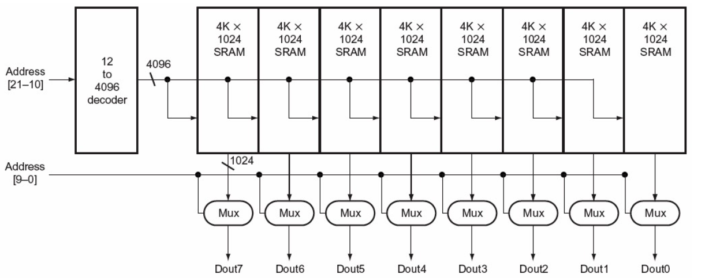
22.3 DRAM
Gli elementi di memoria di tipo DRAM sono meno costosi e più capienti rispetto al tipo SRAM, ma sono più lenti. La DRAM è meno costosa, perché è realizzata con un solo transistor per bit, e un condensatore:
- il condensatore possiede la carica (0/1)
- il transistor viene chiuso, trasferendo il potenziale elettrico del condensatore sulla Bit line (output), grazie al segnale affermato della Word line
- la specifica Word line è attivata sulla base dell’indirizzo di memoria richiesto
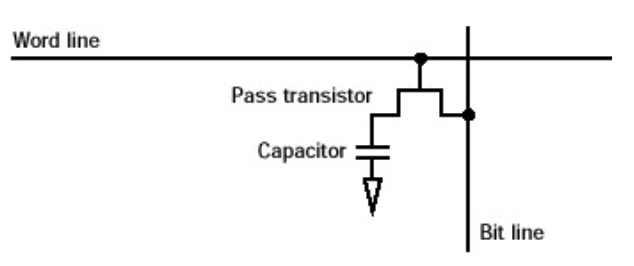
I condensatori mantengono i valori memorizzati solo per alcuni ms. Necessario il refresh dinamico delle DRAM, effettuato leggendo, e subito riscrivendo i valori appena letti.
DRAM (come SRAM) realizzate con decodifica a 2 livelli:
- indirizzo totale di 22 bit
- indirizzo spezzato in due pezzi da 11 bit
Parte alta e bassa dell’indirizzo considerate come indirizzo di RIGA o di COLONNA, rispettivamente:
- indirizzo di RIGA ha effetto sul Decoder
- indirizzo di COLONN*A ha effetto sul Mux
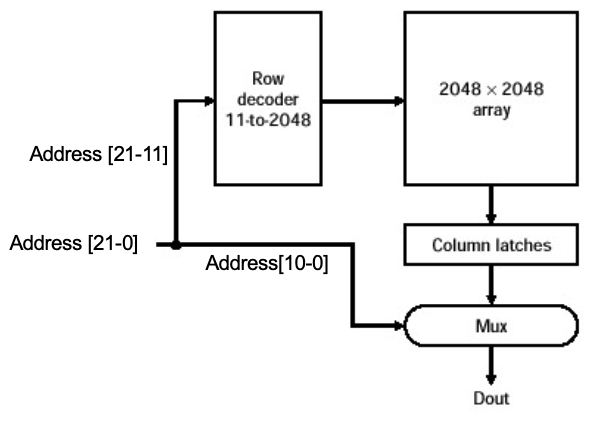
Possibile accesso ottimizzato a bit di memoria consecutivi:
- contenuti nei column latches dopo un accesso di RIGA
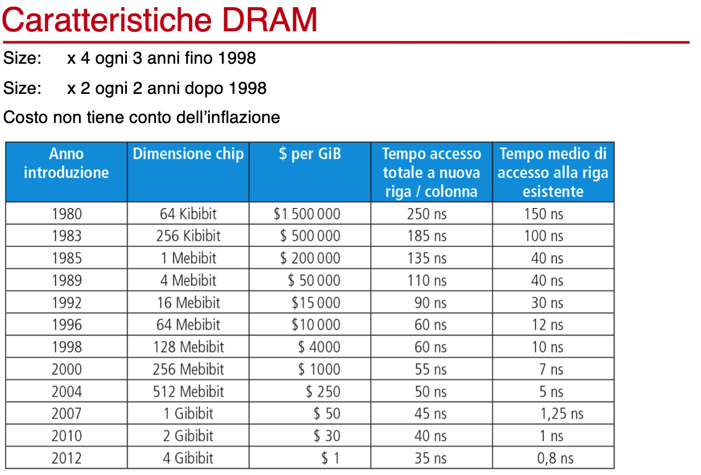
22.4 SSRAM e SDRAM
Abbiamo visto che per diminuire la complessità dei decoder è opportuno suddividere gli indirizzi in 2 blocchi:
- parte alta per accedere una riga
- parte bassa per accedere una specifica colonna
Nota che celle consecutive hanno indirizzi che solitamente differiscono solo per la parte bassa dell’indirizzo:
- quindi sono contenuti all’interno di una stessa riga selezionata con la parte alta dell’indirizzo
- Memoria sincrona (col segnale di clock)
- E’ possibile specificare che vogliamo trasferire dalla memoria un burst di dati (ovvero una sequenza di celle consecutive)
- Ogni burst specificato da un indirizzo di partenza, e da una lunghezza
- Le celle del burst sono contenute all’interno di una stessa Riga, selezionata una volta per tutte tramite decoder
- La memoria fornisce una delle celle del burst a ogni ciclo di clock